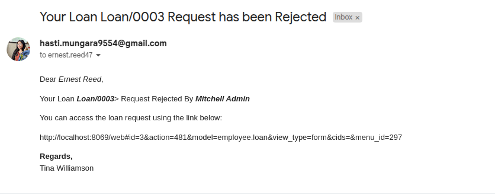
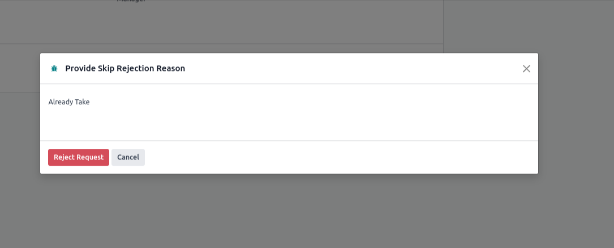

View Paid Loan Journal Entry from Loan Request Form
Access the paid loan journal entry directly from the loan request form for easy tracking and verification.

Odoo Innovation Starts at MASTERMOON
The Employee Loan Management module streamlines the process of handling employee loans within Odoo. It allows HR managers to define loan policies, approve or reject loan applications, and schedule automatic loan deductions through the payroll system. Employees can view their loan details and track repayments with transparency. This module ensures better control, accuracy, and efficiency in managing loans.
A complete overview of loans with clear visibility into requests, approvals, repayments, and history – ensuring transparency for both HR and employees.
Employees can easily request loans, and the system automatically calculates EMI schedules. A smooth and simple process that ensures accuracy and saves time.
Attach and manage essential documents directly within the loan form for better compliance and easy record-keeping.
Employees can submit loan requests easily with all details captured in one place, streamlining the approval process.
Automatic notifications keep department managers updated on loan requests, ensuring smooth communication and faster response.
Department managers can reject loan requests with comments, maintaining transparency in the approval workflow.
Managers can provide specific reasons when rejecting a loan request, ensuring transparency and clear communication with employees.
Employees are immediately notified when their loan request is rejected, along with the provided reason, helping them take further actions.
Department Managers can review and approve loan requests submitted by employees, ensuring compliance with organizational policies before escalating further.
Once approved by the Department Manager, the HR Manager is notified to confirm the loan request and take the necessary final approval steps.
The HR Manager has the authority to reject loan requests after reviewing employee eligibility, ensuring the financial stability of the organization.
HR Managers can provide a detailed rejection reason, helping employees understand why their loan application was not approved.
Once the HR Manager rejects the request, the employee is notified with clear details and the stated reason for rejection.
HR Manager reviews and confirms the loan request, ensuring all eligibility criteria are met before approval.
Once approved, the employee receives a notification confirming their loan request and details of the repayment schedule.
HR Manager processes the loan payment, marking it as paid and updating the employee’s loan record for transparency.
Access the paid loan journal entry directly from the loan request form for easy tracking and verification.
The journal entry reflects the payment of the loan, automatically generated in Odoo accounting for accurate financial records.
Once all steps are completed, HR marks the loan request as done, finalizing the process in the system.
HR can send detailed loan information directly to the employee for transparency and record keeping.
Employees receive their loan details, including repayment schedule and EMI calculation, for full visibility.
Generate comprehensive loan reports to review all active and completed loans with detailed summaries.
The system automatically deducts loan instalments from employee payslips, ensuring accurate and timely repayments.
Employees can request to skip an instalment, which triggers a notification for managerial approval.

Once approved, a notification is sent to the Department Manager to confirm the skip instalment request.
Department Manager reviews the skip instalment request and has the option to reject it.
The manager provides a reason for rejecting the skip instalment request to maintain transparency.
Once rejected, a notification is sent to the employee explaining the rejection of the skip instalment.
Department Manager reviews and approves the skip instalment request.
HR Manager receives a notification for confirmation after department approval.
HR Manager has the option to reject the skip instalment request.
HR Manager provides the reason for rejecting the skip instalment request to the employee.
Employee is notified about the rejection of their skip instalment request.
HR Manager confirms the skip instalment request after reviewing it.
Employee receives notification that their skip instalment request has been approved.
Skip instalment process is completed and finalized by HR Manager.

 NEED CUSTOMIZATION
NEED CUSTOMIZATION
 THEME SUPPORT
THEME SUPPORT
 HAVE ANY QUESTION
HAVE ANY QUESTION